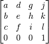

Affine transforms¶
To support proper 3D operation, it would make sense to extend the existing support for 3×3 2D affine transforms to 4×4 3D transforms.
For both 2D and 3D transforms, translation, rotation and scaling are supported. Skewing, using the bottom row of the matrix, is not.
2D transforms¶

3D transforms¶
